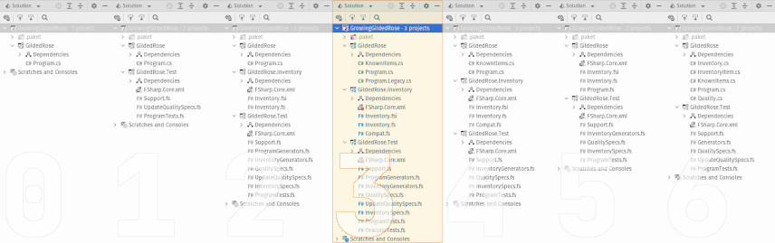

This is part three-of-four in the series, Growing a Gilded Rose. Over the course of these four blog posts, I hope to demonstrate incrementally improving a legacy code base which has thorny requirements, while also presenting a few different software development tools or concepts. The full series is as follows:
- Make it Testable
- Next Year's Model
- When Worlds Collide (this post)
- A New Requirement Appears
Bonus Content

Overview
Welcome back! We're continuing to tackle the Gilded Rose Kata. We've made
great strides thus far. Most recently, we codified the various business rules
into a lean and safe domain model. The code, as it stands at the end of the
previous post, is available in the companion repository, in a branch
called 2_model-fs.
Now, since we've become rather comfortable with the domain, we're going to rework our legacy program to make use of our new model. This presents a few interesting challenges, as the model is written in F#, while the program's source code is C#. Combining the two isn't so difficult. But it does require some care. Also, after we've made all our changes, we'll introduce an oracular test, as a way to make sure everything is still behaving properly.
Polishing the F# Model
C# and F#, like all .NET languages, compile to a common byte code (rather than machine-specific native code). This means that a compiled artifact -- called an assembly -- can be referenced by one language despite the assembly being written in a different language. Unfortunately, byte-code compatibility is not sufficient for an overall positive experience. C# and F# have distinct cultures, differing histories, and each provides affordances the other lacks. This is especially visible when an F# library is consumed from a C# code base. So, we'll need to augment our inventory model, making integration much smoother.
First, we'll apply a small quality-of-life hack to the updateItem function.
F# recommends camel cased naming for module-level functions. These appear
as static methods in C#. Unfortunately, the long-established convention in
C# is to use Pascal casing for static methods. Fortunately, F# provides
the CompiledNameAttribute. This curious bit of metadata causes our
function to have one name when used in F# code -- but a different name when
consumed from other languages. Here, we simply use it to change the casing.
But it's worth noting: we could have just as easily supplied an entirely
different name (e.g. UpdateQuality or Do_It_Now).
/// Change the quality and "shelf life" for an Item
/// (i.e. apply appropriate rules for the passage of a single "business day").
[<CompiledName("UpdateItem")>]
val updateItem : item : Item -> Item
The other major enhancement we'll make for compatibility's sake is to provide a
helper method for getting constituent data out of an Inventory.Item. We want
to deliver this data in a way the legacy code can easily use -- particularly in
conjunction with the GildedRose.Item class.
So our model library now has a file called Compat.fs, into which we've placed
a single extension method, so as to keep the core model implementation as
uncluttered as possible. The helper, in its entirety, is as follows:
[<Extension>]
type ItemExtensions =
/// Decomposes Inventory.Item into a triple (name, quality, and sellIn)
/// whose values have been normalized for consumption from C#
/// (n.b. for legendary items, sellIn is always zero).
[<Extension>]
static member Deconstruct
(
item : Item,
name : outref<string>,
quality : outref<byte>,
sellIn : outref<int>
)
=
match item with
| Legendary (name', quality') ->
name <- name'
quality <- byte quality'
sellIn <- 0
| BackstagePass (name', quality', sellIn')
| Appreciating (name', quality', sellIn')
| Depreciating (name', quality', sellIn') ->
name <- name'
quality <- byte quality'
sellIn <- int sellIn'
Effectively, we pattern match on each variant of the Inventory.Item.
Regardless of the case being matched, we extract the underlying data and return
it to the caller via output parameters. Doing so, in conjunction with giving the
extension method the very deliberate name Deconstruct, permits callers to
use a feature known as deconstructors (assuming a recent-enough version
of C#). A call site which invokes this might look like the following:
Inventory.Item updated = Inventory.UpdateItem(original);
var (name, quality, sellIn) = updated;
Behind the scenes, the compiler translates the second line into, roughly, the following (“old-school”) code:
string name;
byte quality;
int sellIn;
InventoryExtensions.Deconstruct(updated, out name, out quality, out sellIn);
If, for some reason, the model needs to be used from an older version of C#, then everything still works quite well, albeit with less “syntactic sugar”. In any event, we are now ready to modify the legacy program such that it consumes the inventory model.
Refactor the C# Program
After making sure to add an F# project reference to the C# console application, we need to deal with the following aspects of integration:
- Preserving the original
UpdateQualitymethod (we'll need this for testing). - Mapping between the name-driven legacy items and the type-driven model items.
Handling the first is easy enough. In fact, the original description we received even hints at part of the changes needed:
you can make the UpdateQuality method... static if you like...
Making the method static greatly simplifies testing. However, we'll go further
and also relocate the method to its own file, Program.Legacy.cs.
namespace GildedRose
{
public partial class Program
{
//NOTE When we finally discard this function, several tests need to be changed.
public static void UpdateQuality(IList<Item>? items)
{
// ... implementation unchanged ...
}
}
}
Note that the method remains part of the Program class, thanks to C#'s
partial class feature, which lets one type span multiple source files.
However, the body of the method is completely unchanged. Isolating the method
in this way isn't technically necessary. But it reduces the clutter in the
main program file, while serving to highlight the method's significance.
Next, we have to tackle going from simple strings to Inventory.Item variants.
There's no way to avoid doing some string matching. But we can make things a bit
better by sticking to some pre-defined constants (rather than repeating the same
literals all over the place). In fact, we already did this work -- as part of
the random data generation in our test suite. However, it seems sensible to
relocate this logic into our main program now. We'll create a static class,
which contains one constant for each inventory item name, as follows:
/// <summary>
/// Since an item's "kind" (and thus, its behavior) might sometimes be
/// determined by its name, it's useful to have some well-known names.
/// </summary>
public static class KnownItems
{
// Depreciating items
public const string Dex5Vest = "+5 Dexterity Vest";
public const string Mongoose = "Elixir of the Mongoose";
public const string ManaCake = "Conjured Mana Cake";
// Appreciating items
public const string AgedBrie = "Aged Brie";
// Backstage Passes
public const string StageTix = "Backstage passes to a TAFKAL80ETC concert";
// Legendary items
public const string Sulfuras = "Sulfuras, Hand of Ragnaros";
}
With this in place, we can define a helper method which turns a GildedRose.Item
into an Inventory.Item, using the previously defined constant strings in order
to determine which variant of the model item is constructed.
static StockItem Evolve(Item item)
{
var quality = Quality.Of((byte) item.Quality);
return item.Name switch
{
KnownItems.Sulfuras and var name =>
StockItem.NewLegendary(name, default),
KnownItems.StageTix and var name =>
StockItem.NewBackstagePass(name, quality, item.SellIn),
KnownItems.AgedBrie and var name =>
StockItem.NewAppreciating(name, quality, item.SellIn),
/* depreciating */ var name =>
StockItem.NewDepreciating(name, quality, item.SellIn)
};
}
This utility method contains a number of interesting details. First, what is
StockItem? It's simply an alias for Inventory.Item. Next, in the body
of the helper, we begin by creating an instance of Quality on line 3, based on
the value of the legacy item. Then we return the result of a
switch expression, wherein we match an item's name against several special
values (lines 7, 10, and 13). If none of the special values matched, we must
(by process of elimination) have a Depreciating item (line 16). It is
important to note: this logic only works because three of the fours item kinds
correspond to a single “known item”. If we had, for example, several
Legendary items, we'd need a more complex set of checks. Regardless, in all of
our switch arms, the legacy item's name is bound to a local variable (name) as
a convenience. Once a legacy item's name is successfully matched (or we hit the
“catch all” arm), the appropriate construction function gets invoked. But where
are these constructors defined? It turns out, for any discriminated union case
which carries data (i.e. has fields), the F# compiler will automatically
generate a C#-visible static method. There's no special validation logic in the
generated constructor. But in this case, we don't need any, because we delegated
any needed processing to the Quality type, or the updateItem function.
Now, the Evolve method can be combined with the model's updateItem
function, and a simple foreach loop, to provide the same behavior as the
legacy implementation (UpdateQuality). We package all of this up into a method
on the Program class as follows (comments added solely for this blog post):
public static void UpdateItems(IList<Item>? items)
{
if (items is null) return;
foreach (var item in items)
{
var evolved = Evolve(item); // ⮜⮜⮜ from legacy item to model item
var (_, quality, sellIn) = UpdateItem(evolved);
// ⮝⮝⮝ leveraging the Deconstruct utility mentioned previously
item.Quality = quality; // ⮜⮜⮜ copy new value to program state
item.SellIn = sellIn; // ⮜⮜⮜ copy new value to program state
}
static StockItem Evolve(Item item)
{
... implementation elided ...
}
}
This method reveals another aspect of the Evolve helper. It is defined as a
static local function, since no other code paths should traffic with it.
Also, we see (on line 8) the compatibility enhancements we made to the model.
Meanwhile lines 10 and 11 demonstrate:
- Preserving the original contract
- Mixing an immutable “core” with mutable program state
Finally, having done all this other work, we can modify our program's entry point to use the model. Briefly, recall we had this:
public static void Main()
{
// ... other code elided ...
app.UpdateQuality(app.Items);
// ... other code elided ...
}
We can now change it to call UpdateItems like so:
public static void Main()
{
// ... other code elided ...
UpdateItems(app.Items);
// ... other code elided ...
}
At this point, if we run the program, we should not observe any changes in behavior. However, we can push that a bit further by creating an oracular test.
Consult the Oracle
Conceptually, the notion of a test oracle is rather simple. You take some input and process it with both a known good program and a new different program under test. If the output of both programs is the same, then you can be comfortable in replacing the old with the new. This is actually very similar (at least at an highly abstract level) to the approval testing we mentioned at the start of the blog series. However, where approval tests focus on specific output, oracular tests are generally conducted in terms of any output. This actually pairs rather well with property-based testing. Generically, any property-based use of a “test oracle” follows the same pattern:
- Generate random -- but valid -- inputs.
- Invoke “know good” program with the inputs; save the outputs.
- Invoke “program under test” with the inputs; save the outputs.
- Assert the outputs from the previous two steps are equal.
We will do exactly these steps. However, our “know good” program will be the
legacy method UpdateQuality (See? This is why we kept it around for a bit
longer). Meanwhile, our “program under test” is the new method UpdateItems,
which we just reviewed. Let's break it down into pieces. First, we generate
inputs.
let `after +N days, UpdateQuality and UpdateItems produce the same results`
(NonEmptyArray (items : OldItem array))
(PositiveInt totalDays)
=
This harkens back to other test code we've discussed. OldItem is simply a
type abbreviation for the GildedRose.Item class defined in the legacy
code (and “owned” by the goblin in the corner). And we've asked FsCheck to
generate a non-empty array of one, or more, instances of said class. We're also
generating a whole number in the range of 1 to 2147483647, inclusive. This will
be used to “age” the inventory items a random number of days. Next, we arrange
the “test oracle”.
// arrange
let oldItems =
[|
for item in items do
OldItem(Name=item.Name, Quality=item.Quality, SellIn=item.SellIn)
|]
//NOTE ⮝⮝⮝ fully copy to preserve original -- because mutable
for _ in 1 .. totalDays do Program.UpdateQuality(oldItems)
let expected = oldItems |> Seq.sortBy (fun item -> item.Name)
First, on lines 2 through 6, we take a defensive copy of the generated inventory
items. Remember: our program methods are mutable operations. The extra copy here
ensures we can use the inputs correctly with our “program under test”. This code uses two interesting features of F#:
array literals (the [| and |] characters) and
sequence expressions. Next, we
call UpdateQuality multiple times in succession (line 8). This has the effect
of “aging” the inventory items for as many days as we were given input. Finally,
on line 9, we sort the fully “aged” items by name. This will be necessary later.
Now we can move on to the “program under test”.
// act
for _ in 1 .. totalDays do Program.UpdateItems(items)
let actual = items |> Seq.sortBy (fun item -> item.Name)
Here, we have far less setup. But we follow the same overall approach. All the
items are “aged” by calling UpdateItems repeatedly. Then everything is sorted
by name. We do NOT need to take a defensive copy, because after this we no
longer need the original input values. Thus, it's safe to mutate them.
// assert
actual
|> Seq.zip expected
|> Seq.forall (fun (old, act) ->
old.Name = act.Name
&& old.Quality = act.Quality
&& old.SellIn = act.SellIn
|@ $"{NewLine}expected: %A{expected |> Seq.map (|OldItem|)}"
+ $"{NewLine}actual: %A{actual |> Seq.map (|OldItem|)}"
Finally, we compare the two sets of “aged” inventory items. Given the two
sequences of items, we join them together pairwise, using Seq.zip.
Having the items sorted by name should ensure the correct pairings. Then we pass
over each pair of items asserting that both elements have the same constituent
values. Please note, we must compare each item's property individually. The
GildedRose.Item is a C# class. As such, it uses reference equality. This
is in contrast to many other constructs (records, discriminated unions, et
cetera), which use structural equality. An eager reader might ask, "Why
not change it to a struct or a record, then?" But we can't... referring back to
the original info we were given (emphasis added):
However, do not alter the Item class or Items property as those belong to the goblin in the corner who will insta-rage and one-shot you as he doesn't believe in shared code ownership...
Finally, on the last two lines of the test, we use FsCheck's labelling feature to print a useful diagnostic message (in the event of test failure). For completeness sake, the full code of the oracular test is as follows:
module OracularTests =
[<Property>]
let `after +N days, UpdateQuality and UpdateItems produce the same results`
(NonEmptyArray (items : OldItem array))
(PositiveInt totalDays)
=
// arrange
let oldItems =
[|
for item in items do
OldItem(Name=item.Name, Quality=item.Quality, SellIn=item.SellIn)
|]
//NOTE ⮝⮝⮝ fully copy to preserve original -- because mutable
for _ in 1 .. totalDays do Program.UpdateQuality(oldItems)
let expected = oldItems |> Seq.sortBy (fun item -> item.Name)
// act
for _ in 1 .. totalDays do Program.UpdateItems(items)
let actual = items |> Seq.sortBy (fun item -> item.Name)
// assert
actual
|> Seq.zip expected
|> Seq.forall (fun (old, act) ->
old.Name = act.Name
&& old.Quality = act.Quality
&& old.SellIn = act.SellIn
) |@ $"{NewLine}expected: %A{expected |> Seq.map (|OldItem|)}"
+ $"{NewLine}actual: %A{actual |> Seq.map (|OldItem|)}"
Conclusion
In this blog post we saw how easy it can be to enrich a C# codebase with some
useful functionality developed in a separate F# project. Further, we explored
a powerful application of property-based testing, which can assist in the
sensitive task of modifying brownfield software. As with previous posts in this series, you may find all of the code listed above,
plus addition tests and utilities, in the companion repository, in a branch
called 3_coalesce.
Hopefully, you'll continue onto the next post in the series, where we'll -- finally! -- get to the stated goal of the Gilded Rose Kata: adding a new kind of inventory item. Also, you are welcome to ask questions and share feedback in the discussion forum for this endeavour.